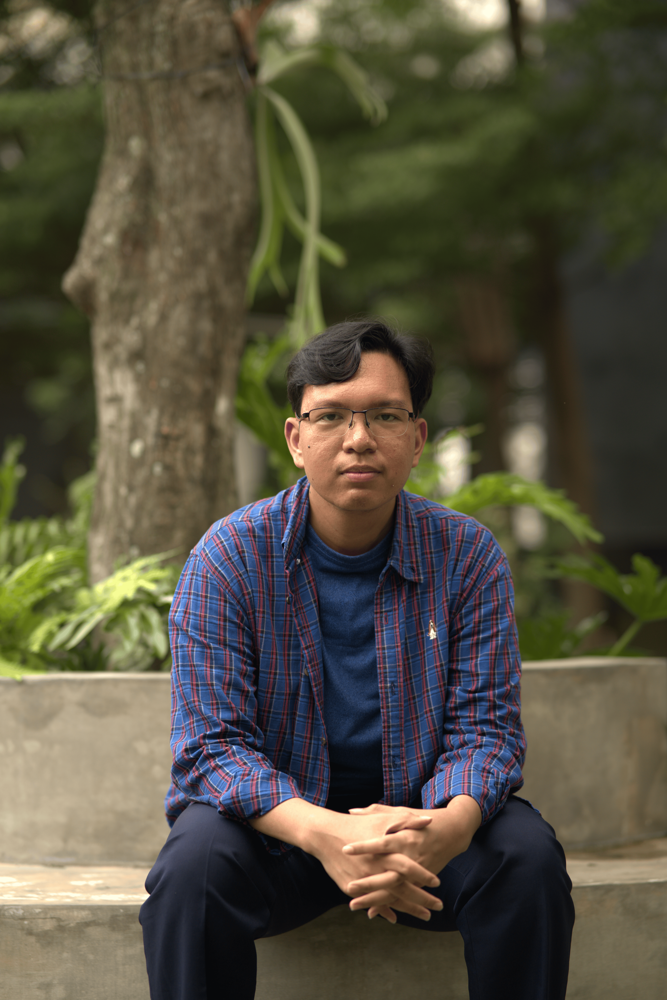

Christian Gerrard Sembiring
Contact
- +62 821-5854-3002
- gerrardsembiring2005@gmail.com
- @ger.366_
Language
- Indonesia
- Japan
- English
Skills
- Project Management
- Business Management
- Design
- Figma
- Photoshop
- Canva
About Me
Hello, my name is Gerrard. I am 18 years old and a student at the Faculty of Computer Science at Brawijaya University, majoring in Information Systems, first year, second semester. Enthusiast about tech, business, and science. I am interested in current IT and business trends and always want to study and develop my hard and soft skills
Experience
Product Manager
Project Desa Filkom
May 2024 - June 2024
Organizing and providing input to
other departments, and maintaining the village project
until completion. Making minimalist design with flow
animation in Figma for the village website.
Product Manager
Raion Internship
February 2025 - March 2025
I started my journey as a Product Manager at Raion Community,
where I led the development of a smart parking application. I was responsible for designing the overall business process,
ensuring that each feature aligned with our users' needs. I also defined the core value proposition of the app and structured
the application flow to provide a seamless user experience. This role allowed me to combine strategic thinking with hands-on product development
to deliver real impact.
Head of Design and Public Relations Division
PMK Daniel
February 2025 - April 2025
As the Head of the Design and Public Relations Division at PMK Daniel, I led a team of members in managing and executing
various design projects. I guided them in creating impactful and consistent visual designs while also mentoring them
on the principles of good design. In addition to managing internal design tasks, I was responsible for handling external relations,
including communication and coordination with individuals or organizations interested in collaborating with PMK Daniel.
UI/UX Designer (Freelance)
Personal Project - Salon Website
January 2025 - February 2025
Designed an informative and attractive salon website based on client needs.
I conducted initial discussions to understand their needs, created wireframes and high-fidelity mockups using Figma, and implemented a modern layout that aligned with the salon's branding.
Created UI/UX layouts using Figma and provided engaging content to highlight services and promotions.
Education
Brawijaya University
Information Systems
2023 - Present
SMA Negeri 13 Jakarta
Natural Science
June 2020 - June 2023
SMP Negeri 3 Pontianak
Natural Science
June 2017 - June 2017